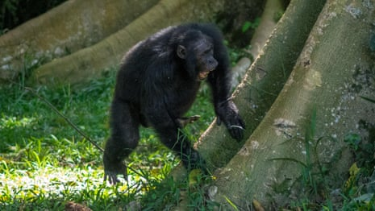
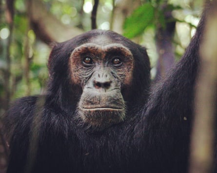

They might not produce Gershwin hits, but chimpanzees have got rhythm, researchers have found in a study they say sheds light on the evolutionary origins of music.
Scientists have previously found chimpanzees drum on the buttress roots of trees to send information to each other, with each individual having their own signature style.
However, it remained unclear whether the chimpanzees drummed rhythmically.
Now researchers say they have not only found chimpanzees drum with non-random timing, but that the rhythms differ between subspecies.
The team said the revelations shed light on the evolutionary origins of a feature that sits at the heart of human social behaviour, from conversation to music-making.
“[The findings] are a strong suggester that those building blocks [of rhythm] that we have then used in all of our social behaviour and all of our music were present way back in our last common ancestor,” said Prof Catherine Hobaiter, a senior author of the work from the University of St Andrews.
The study, published in the journal Current Biology and led by PhD student Vesta Eleuteri, reveals how the team studied 371 drumming bouts produced by 47 chimpanzees acrosssix populations from two subspecies – eastern and western chimpanzees.
The team compared the drumming with random patterns of beats, revealing all the chimpanzees showed non-random timing.
“It had a predictability to it. And when you’ve got predictability, you’ve got a really strong indicator that there’s rhythm there,” said Hobaiter.
Video shows adult chimpanzee drumming to a rhythm – video
The researchers then compared the drumming of the two subspecies, finding western chimpanzees drummed with evenly spaced intervals between beats – like the tick of a clock – while eastern chimpanzees alternated between shorter and longer intervals, resulting in a swing-like beat.
However, western chimpanzees use more hits in their drumming than eastern chimpanzees, despite the bouts lasting for the same duration, suggesting they drum with a faster tempo.
In addition, the eastern and western chimpanzees drummed at different points when making what are known as “pant-hoot” calls.
Researchers discovered that chimpanzees drum rhythms vary by subspeciesPhotograph: Catherine Hobaiter
The researchers say it is unclear why the subspecies drum with different rhythms, noting it does not appear to be down to ecological factors.
“If you’ve got an itty bitty root or an amazing rainforest tree and you’re from west Africa, you’ll drum more similarly to each other than a chimp from west Africa in the rainforest and a chimp from east Africa in a rainforest,” said Hobaiter.
Instead, she said it might be associated with societal differences, noting eastern chimpanzees are more violent towards each other – or that chimpanzees in east Africa need to share more detailed information with each other.
“When you’ve got more variable intervals – those long, short, long shorts – you might be able to encode a bit more information in there, in the same way as you could with morse code rather than if you had only a sort of ticking clock sound,” Hobaiter said.
Hobaiter added that while chimpanzees were not producing human-like musical rhythms, their drumming shared some of its fundamental properties, pushing back the evolutionary origins of music by several million years.
“Before humans were human – six, seven million years ago – the apes that were roaming around that eventually would evolve into chimpanzees and humans probably had some basic building blocks of rhythm,” she said.